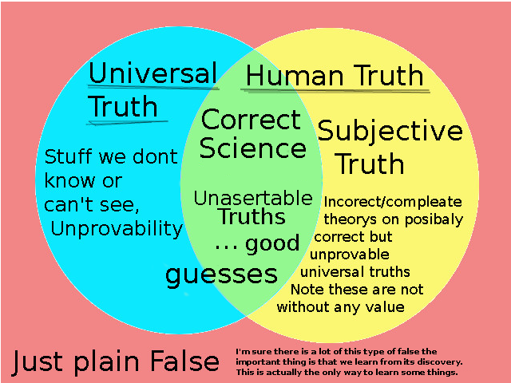

SHARED GOAL OF LIFE
HomeModal Logic Blog Post / Final Project
Phil 455W Kier Lindsay 301276300
Introduction
The purpose of this is to give a philosophical overview of modal logic and some motivation as to why it might be useful and how it might be used. This should give us the resources to grasp the nature and utilize the concept in day-to-day problem-solving.
So what is Modal Logic?First we may look at what we mean by 'modal'.
"A modal is an expression (like ‘necessarily’ or ‘possibly’) that is used to qualify the truth of a judgement." ~ Stanford Encyclopedia of PhilosophyI think the important idea is that we are trying to qualify the truth has nuance. In english the term modal is a little more generic. Modal is defined as:
"Think of modal as relating to some "mode," or form. A modal verb is a helper that gives additional information about the verb that follows it, and includes such words as "can," "will," "should," and "may," among others." ~ Vocabulary.comBut we can see how the term could relate to Logic
"Logic - noun" ~Dictionary.com
- The science that investigates the principles governing correct or reliable inference.
- A particular method of reasoning or argumentation: We were unable to follow his logic.
- The system or principles of reasoning applicable to any branch of knowledge or study.
- Reason or sound judgment, as in utterances or actions: There wasn't much logic in her move.
- Convincing forcefulness; inexorable truth or persuasiveness: the irresistible logic of the facts.
Again I'll ask What is modal logic? Modal as in the mode of operation of a word or idea more specifically the mode of truth. Logic is the tool for reasoning about the world.
If we put it together modal logic - probably more verbosely modal propositional logic considers the mode of a statement over a variety of philosophic and scientific terms such as space, time, moral obligation, correctness, etc. The Base system concerns necessity □ and possibility ◇ With propositional logic. There are then a few condensed axioms that can be applied strategically to reason about arguments.It's basically propositional logic of linguistic sentences and the process of converting them to statements. We consider statements and operators. An example statement is the sky is blue. is this true? How do we prove it?
truth is a funny thing it's dependant on the scope of aspects you consider and because we are human and have differing frames of reference. For the most part we try and find the ground truths that we can share with others. These are truths that given all available information would still hold. I find it helpful to think of truth in the realm of who it is true relative to. There is my truth and yours and independent of that there is what actually is true. Buddhists use the metaphors of a wheel. The wheel of life is truth and all suffering is caused by the misalignment of our truth with reality. I'll draw it as a ven diagram and the goal is to move the domain of human truth to perfectly align with reality.

Some might call the truth: Those conclusions that are evident once all relevant facts are correctly considered.
A simple example of the search for truth may start by looking up on a sunny day saying yeah the sky is blue. And calling our statement true.
The problem with that is that when the sun goes down its red and fades to black. What is this I thought the sky was blue!
The problem is the sky's color is conditional on the time and place so considering that we might say
the sky is blue when it is daytime. But what about clouds... And so on we get more specific
until we give up and throw our hands in the air and say well it's sometimes blue and sometimes not and
it depends on the weather which we cannot predict. so the sky is possibly blue and possibly not blue ( ◇The
sky is blue ^ ◇~The sky is blue ).
more formally:
let p = "the sky is blue."
Observation:
◇p the sky is possibly blue because I have seen it be blue
◇~p the sky is possibly not blue because I have seen the night
We could then make our scope more specific or explore other expressions and implications
of what we have observed if we use the Def◇ axiom (◇ = ~□~),
or in English possibility is just to be not necessarily false.
We find that:
◇~p = ~□~~p = ~□p the sky is not necessarily blue because I have seen it be not blue.
◇p = ~□~p the sky is not necessarily not blue because I have seen it be blue.
condensed english: the sky is possibly but not necessarily blue.
Someone clever might point out. Well the sky is not actually blue it just appears blue when the sun is viewed through the right amount of atmosphere such that the blue light is scattered by the atmosphere a bit more and uniformly makes it into our eye causing us to see the sky a blue, and you would be right. What has happened is we have found a divide in how we think about 'the sky' is it (a) What we see when we look up or (b) the atmosphere. This is why definitions are important in the pursuit of truth. We can sometimes find that the question is nonsense. What is the meaning of life? 42.
This is fundamentally what modal logic is. The Base system propositional logic plus necessarily □
and
possibly ◇.
The addition of modal qualifiers to say in what way something is true.
This is what we call system K or Kripke semantics and it also includes the axioms.
Necessitation Rule: p → □p \\ If A is assertable then it is necessary that A is assertable Distribution Axiom: □(p→q)→(□p→□q). \\ If it's necessary that A implies B then A being necessary implies B is also necessaryWe also need one more axiom
(M): □p → p or if it is necessary that p is true then p is true.
This completes the fundamental base for modal logic systems (Systems M).
This seems to be a minimalistic but powerful system that allows for being extended as needed.
Also by being minimal it has a higher likelihood of being correct.
There is then a series of systems S1 through s5 which build on system M.
I recommend reading through these converting to english in your head to grasp the intuition behind them.
These systems seem useful and mostly correct. I don't see much reason to abandon their study. The question then becomes what problems are you trying to solve, what questions are you asking? I may touch back on the question of how we can use logic to find other questions later. But generally, I'd advocate to find the problem and only then begin the search for a solution. First, we will switch back to truth, we want to know how to find and assert truth.
A quick note on notation I am a developer so will use a mix of math and programming conventions I like the simplicity and universality of plain text expression so will do any math in text.
// // indicates a comment
p,q,r // propositions ie the sky is blue
~, ! // not I will use the math ~ over the programing !
p->q // implies / if p then q
^, && // and, I will use ^ or type the word and
v, || // or, I will use v or type the word or
{a, b} // sets
◇, <> // possible
□, [] // necessarily
T, 1 // True
F, 0 // False
<-> // bi directional implication (a -> b) and (b -> a)
= // assignment
== // equivalence
=> // function in js, nice way of thinking of it.
// The meaning I think of mathematically is like ... or after some steps.
For a refresher on symbols if you dont recognize them.
The topic of provability seems particularly relevant and interesting interesting. First we are proving it to both ourselves an others.
"1. The history of provability logic
Two strands of research have led to the birth of provability logic. The first one stems from a paper by K. Gödel (1933), where he introduces translations from intuitionist propositional logic into modal logic (more precisely, into the system nowadays called S4), and briefly mentions that provability can be viewed as a modal operator. Even earlier, C.I. Lewis started the modern study of modal logic by introducing strict implication as a kind of deducibility, where he may have meant: shadow deducibility in a formal system like Principia Mathematica, but this is not clear from his writings. The other strand starts from research in meta-mathematics: what can mathematical theories say about themselves by encoding interesting properties? "
~ Stanford Encyclopedia of Philosophy
A philosophical thought on provability. In our search for answer's we fundamental decided to be objective and therefore need systems like math to quantify the natural world and reason about it. Because of this, we are attracted to systems that allows us to systematically assert other things based on our observations.
If we model the set of propositions uttered by anyone (H) and attempt to map it onto true and false. We run into the problem of Human truth does not align with Universal truth. This is why we decide to anchor things outside of human speculation and firmly on the grounds of quantified measurements of the world.
There seems to be a meta-problem of how do we know our system is universal if it is derived from the murky waters of human truth. So we use quantification systems and make observations and measurements.
A note on simplicity. sometimes we go about this problem searching for the source, the root, or the one unifying theory in the name of the elegance of life and so we forget that there is no one way forward. I like to think it's more of an expanding graph of knowledge that we are trying to sort through to find answers. The important and life-critical questions are the ones that we care so much about being correct that we do not allow ourselves to bet on speculation alone and need ground up proof of what we assert. Ground up is not necessarily simple and not necessarily unified.
Of the graphs, if we take the measured and irrefutable facts and logically map out from there we can begin to define the space of human truth.
This is the idea behind Gödel numbers. The concept is that If you can encode each statement as a number. Then you could encode arguments as a list of numbers. His system works by assigning each symbol
Constant sign Gödel number Usual Meaning
~ 1 not
∨ 2 or
∃ 4 there exists an…
⊃ 3 if…then… also ->
= 5 equals
0 6 zero
s 7 the successor of
( 8 Open bracket
) 9 Close bracket
, 10 comma
+ 11 plus
× 12 times
... variables letters starting with x, y ,z
We can then represent every formula by a uniqe number. To do this you simply take the string 'p->q'
x->y Can be encoded as 13, 3, 14 Which make the Gödel number 2^13 * 3^3 *
5^14
function godel(s) {
let godalNum = 1;
for(let i = 0; i < s.length; i++) {
godalNum *= Math.pow(prime[i], decode(s[i]));
} // note you will run into overflows very fast.
return godalNum;
}
This slots into modal logic by Gödel Löb rule (GL) □(□A→A)→□A
But lets just take it at face value for now. We know everything is interwoven and math is logic and logic is math
it has been for a little while. So this Mapping seems useful but is still a question of how to find new true statements.
This is linked more to compatibility and solubility. I am curious if there is an open project mapping the Gödel space.
One of the interesting things emerges from provability is the incompleteness theorems which says if we have a formal system of math then there is some things in it that cannot be proven.
First Incompleteness Theorem: "Any consistent formal system F within which a certain amount of elementary arithmetic can be carried out is incomplete; i.e., there are statements of the language of F which can neither be proved nor disproved in F." (Raatikainen 2015)
Second Incompleteness Theorem: "Assume F is a consistent formalized system which contains elementary arithmetic. Then F ⊬ Cons ( F ) (Raatikainen 2015)
The standard proof of the second incompleteness theorem assumes that the provability predicate ProvA(P) satisfies the Hilbert–Bernays provability conditions. Letting #(P) represent the Gödel number of a formula P, the provability conditions say:1. If F proves P, then F proves ProvA(#(P)). 2. F proves 1.; that is, F proves ProvA(#(P)) → ProvA(#(ProvA(#(P)))). 3. F proves ProvA(#(P → Q)) ∧ ProvA(#(P)) → ProvA(#(Q)) (analogue of modus ponens).~Wikipedia Incompleatness theorem
Im not sure if that is so surprising but it is worrying. Especially for those who with to find the one unified system. I dont think we need to worry so much about that. Good enough will have to do and there is still a lot of value in a system for mapping our proves into computers. We have since found much better ways encoding our ideas for computers to reason about. Graph data structures let us modal our mathematical would in a Gödel space like structure for visualization and exploration.
The next steps would be to figure out how to interpret and traverse the graph logically by applying our formal systems to the space. I think this can be done by performing arithmetic on Gödel numbers but more likely will involve adding relational layer on top. I am not positive but have a feeling this merges in to database theory.
For Now I will leave this here I hope by fallowing my thoughts on the matter your understanding of truth was illuminated or at the very least not assaulted. This is just the tip of the iceberg for the formal system of modal logic. I highly recommend diving down the rabbit holes of links of the supplement resources.